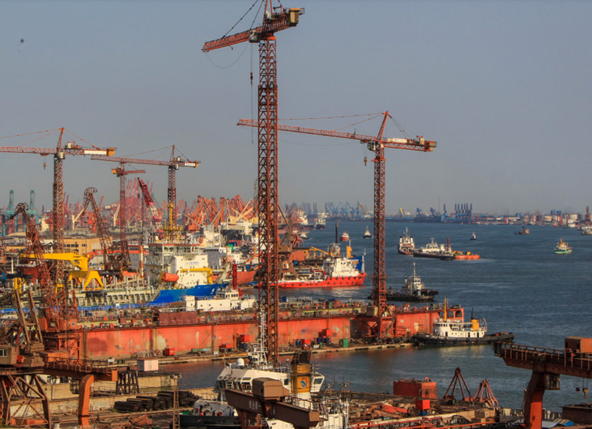

Transportation

Shipping and Trade
Shipping and trade are closely related aspects of the global economy, each playing a crucial role in facilitating the movement of goods and services across borders. Here's an overview of both concepts:
Shipping
Shipping refers to the transportation of goods, commodities, and cargo via ships or vessels on waterways, such as oceans, seas, rivers, and canals. It is one of the oldest and most cost-effective modes of long-distance transportation. Various types of vessels, including container ships, bulk carriers, tankers, and cargo ships, are used to transport a wide range of goods, from raw materials to finished products.
Shipping is an important component of global trade, with numerous forms such as liner, tramp, and specialized shipping. It is a procedure that involves the movement, storage, and distribution of commodities as part of the logistics and supply chain management process. However, the shipping sector has environmental issues, such as emissions and initiatives to improve sustainability.
Trade
Trade refers to the exchange of goods and services between countries, regions, or individuals. It is a fundamental driver of economic growth and development. International trade involves the import and export of goods and services across borders, and it can be bilateral, multilateral, or regional. Trade can be bilateral, multinational, or regional, and it incorporates both products and services. Tariffs, quotas, and non-tariff obstacles may all have an influence on trade, and agreements try to decrease or eliminate them. Economic expansion, access to goods and services, job creation, and higher living standards are all benefits of trade. Many items are produced as a result of complex worldwide supply systems. To summarize, shipping and trade are intertwined components of the global economy, with shipping allowing the physical transfer of products and commerce including the broader interchange of goods and services across borders. Both are necessary for the current global economy to function and play key roles in economic progress and success.
Inland Transportation
Ocean shipping plays a crucial role in connecting landlocked regions to global markets. Landlocked regions lack direct access to the sea and depend on efficient and reliable maritime transportation for both imports and exports. Here's an exploration of how landlocked regions rely on ocean shipping and its significance in their economies: Coastal ports provide landlocked countries with trading access to global markets, allowing them to sell natural resources and import commodities. Ocean shipping assures consistent supply while also supporting businesses and economic growth. The region's competitiveness gains from cost efficiency. Infrastructure development enhances port connection. Trade agreements, whether bilateral or international, provide port access and favorable conditions. Shipping efficiency provides for economic diversity.
In summary, ocean shipping is indispensable for landlocked regions, providing access to global markets, supporting exports and imports, enhancing cost efficiency, driving infrastructure development, and promoting economic diversification.
Climate-Resilient Infrastructure
It is critical to protect transport networks against the effects of climate change. Coastal transport infrastructure is under threat from rising sea levels and harsh weather occurrences. The key aspects highlight the significance of climate adaptation for coastal infrastructure. Coastal transit is critical to the economy, however interruptions caused by weather disasters can result in significant economic losses. Significant consequences include population vulnerability, environmental damage, and national security. When compared to post-disaster restoration, proactive adaption steps can save money.
Coastal infrastructure is linked to other critical infrastructure, and a holistic approach to resilience includes risk assessment, infrastructure investment, nature-based solutions, policy and planning, public awareness, and collaboration among governments, businesses, and communities. This strategy guarantees that coastal transport networks are resilient. To summarize, protecting transport networks from the effects of climate change is crucial. To solve these difficulties and maintain the long-term survival of coastal towns and economies, proactive planning and investment in resilient infrastructure are required.
Conclusion:-
Shipping and commerce are critical to the global economy because they allow commodities and services to flow across borders. Inland transit is critical for landlocked countries since it supports exports and imports while also encouraging economic diversification. Climate-resilient infrastructure is critical for protecting transport networks from the effects of climate change. Risk assessment, infrastructure investment, and collaboration among governments, corporations, and communities are examples of proactive adaption approaches.